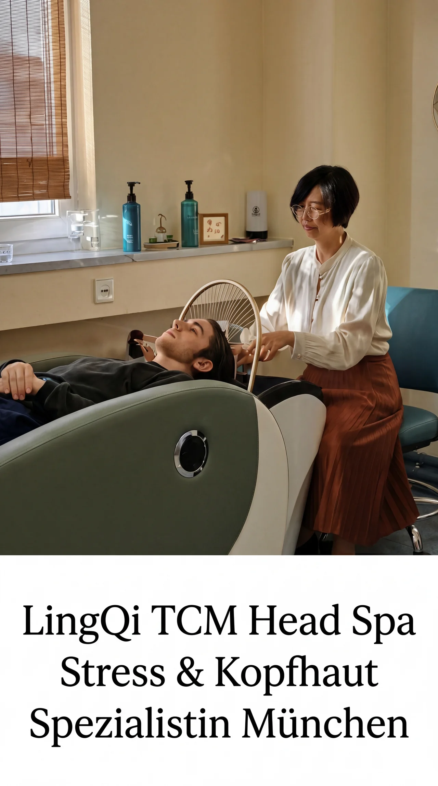

LingQi Referenz
TCM-Praxis · München
LingQi TCM Head Spa München
Von der Analyse zur gemeinsamen Umsetzung: belegte Ausgangslage, konkrete Maßnahmen, offene Messung.
Diese Fallstudie zeigt, wie eine strukturierte SEO-Zusammenarbeit in der Praxis aussieht. Keine aufgeblähten Versprechen, sondern ein dokumentierter Prozess: was analysiert wurde, was gemeinsam umgesetzt wurde, was noch aussteht, und wie im September 2026 gemessen wird.
Executive Summary
Kennzahlen und Ausgangswert
Die Bewertung basiert auf belegten Daten aus der Google Search Console und einer priorisierten SEO-Analyse.
Keywords
Keywords mit Ranking-Potenzial identifiziert und priorisiert.
Ø-Position
Google Search Console Baseline Mai/Juni 2026 im 3-Monats-Fenster.
Haupt-Keyword
Ø-Position für "head spa münchen" als maßgebliches Haupt-Keyword.
Klicks
GSC-Ausgangswert für den Vergleich im September 2026.
Impressionen
3-Monats-Baseline aus der Google Search Console.
CTR
Ausgangswert vor der geplanten Nachmessung.
Ausgangslage
Hochwertige Praxis, strukturelle Sichtbarkeitslücken
LingQi TCM Head Spa ist eine spezialisierte Praxis in München-Haidhausen mit TCM-basierten Kopfhautbehandlungen und Head Spa mit 4D-Liege als technischem Alleinstellungsmerkmal.
Strukturelle Schwächen
- Bestehende Inhalte waren nicht konsequent auf Suchintention ausgerichtet.
- Defekte Links, inkonsistente Adressangaben und widersprüchliche Preise auf englischsprachigen Seiten erschwerten die Nutzerführung.
- Ein strukturierter Content-Plan für kaufnahe Suchanfragen fehlte.
- Google Search Console: 267 Klicks, 5.866 Impressionen, Ø-Position 8,2 im 3-Monats-Fenster.
Einordnung
Die Praxis hatte ein klares Angebot und echte Differenzierung. Die Website übersetzte diese Stärken aber noch nicht sauber in auffindbare Seiten, lokale Signale und priorisierte Inhalte.
Zusammenarbeit
Was gemeinsam umgesetzt wurde
MaxContentSEO liefert Analyse, Strategie und technische Fixes. Die Inhaberin setzt Maßnahmen in ihrem System selbst um und trifft alle inhaltlichen Entscheidungen.
Technische Korrekturen
- Defekter Harmony-Button auf der Startseite repariert.
- Discovery-Buchungsseite
/erstbehandlung-45-minuten/angelegt, damit das Einstiegsangebot für 119 Euro buchbar ist. - Straßennamen auf "Englmannstraße" vereinheitlicht.
- Öffnungszeiten auf Di-Sa 10-17 Uhr über Website, Google Maps und Treatwell vereinheitlicht.
- Preissystem geklärt: Discovery 119 Euro, Master 159 Euro, Harmony 219 Euro, Imperial 419 Euro.
Inhalte und Struktur
- Neues Journal-System mit fokussierten Ratgeber-Artikeln zu Kopfhautgesundheit, Schuppen und Stress.
- Neue Ritual-Landingpages für Master, Imperial, Scalp Health und Stress-Stabilisierung.
- Technische Bereinigung begonnen: Weiterleitungen normalisiert, Impressum und Datenschutz vereinheitlicht.
Analyse abgeschlossen
- SEO-Vollanalyse mit 14 priorisierten Maßnahmen.
- Keyword-Recherche zu Head Spa, Kopfhautbehandlung und TCM München.
- Lokale Wettbewerbsanalyse im Münchner Umfeld.
- KI-Sichtbarkeits-Analyse für ChatGPT, Gemini und Perplexity im Juni 2026.
- Content-Strategie mit Prioritäten und interner Verlinkungsstruktur.
Offene Schritte
Was noch aussteht
Die Fallstudie bleibt bewusst transparent: Einige Maßnahmen sind abgeschlossen, andere gehören in die nächste Umsetzungsphase.
Nächste Umsetzungsschritte
- Dedizierte Landingpage
/head-spa-muenchen/für das Haupt-Keyword. - Weitere Landingpage
/kopfmassage-muenchen/für verwandte Suchanfragen. - Mobile Ladezeit optimieren, besonders durch Bildkomprimierung.
- URL-Kannibalisierung auflösen.
- KI-Sichtbarkeits-Grundlagen implementieren: robots.txt, Schema Markup und llms.txt.
- USP 4D-Liege und TCM-Kopfzonenarbeit in Website-Texte überführen.
Warum das wichtig ist
Lokale SEO-Arbeit wird belastbarer, wenn technische Sauberkeit, Suchintention, Standortbezug und Messmethodik zusammenpassen. Genau darauf ist die nächste Phase ausgelegt.
Methodik
Verbindlicher Messstandard
Alle Vorher/Nachher-Vergleiche basieren ausschließlich auf Google Search Console: Ø-Position impressionsgewichtet, Zeitfenster 3 Monate. Keine geschätzten Besucherzahlen, keine Tool-Momentaufnahmen als Vergleichsbasis.
| Kennzahl | Baseline Mai/Juni 2026 | Nachher September 2026 |
|---|---|---|
| Klicks (3 Monate) | 267 | offen |
| Impressionen (3 Monate) | 5.866 | offen |
| CTR | 4,6 % | offen |
| Ø-Position gesamt | 8,2 | offen |
| "head spa münchen" Ø-Position | 11,4 | offen |
Nachmessung September 2026: Ergebnisse werden hier veröffentlicht.
Nächster Schritt
Ähnliches Potenzial für Ihr Studio prüfen lassen?
Ich analysiere Ihre Website, zeige die größten Sichtbarkeitslücken und sortiere, welche Maßnahmen zuerst wirklich sinnvoll wären.